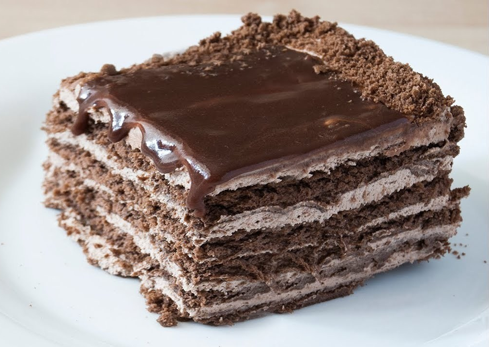

Шоколадный торт без выпечки

Рецепт десерта для сладкоежек и фанатов чёрного шоколада - шоколадный торт без выпечки. Этот торт из печенья и шоколада получается очень насыщенным по вкусу, с нежной, мягкой структурой!
Продукты (на 8 порций)
Печенье песочное сахарное - 400 г
Сливки (жирностью не менее 33%) - 200 мл
Шоколад черный - 200 г
Масло сливочное - 130 г
Сахар - 100 г
Какао-порошок - 50 г
Ванильный сахар - 0,5 ч. ложки
Вода - 250 мл
Подготовьте все необходимые продукты. Печенье потребуется песочное, типа "Юбилейного". Какао-порошок и сливочное масло берите самые лучшие, натуральные, качественные. То же самое относится к шоколаду и сливкам. Сливки подойдут только жирные. Сливочное масло оставьте при комнатной температуре, чтобы оно стало мягким.
В кастрюлю налейте воду, всыпьте сахар, ванильный сахар и какао.
Добавьте сливочное масло.
Нагревайте, помешивая, до получения однородной массы. Потребуется около 7 минут.
Песочное печенье поломайте руками на кусочки. Я поломала печенье мелко, опасаясь, что пропитки будет мало, однако сомнения оказались напрасными, всё отлично пропитывается. Поэтому можно ломать печенье более крупными кусочками.
Залейте поломанное печенье приготовленной шоколадно-масляной массой.
Перемешайте.
Выложите в форму (желательно разъемную) и утрамбуйте.
Приготовьте ганаш из шоколада и сливок. В кастрюльке прогрейте жирные сливки, не доводя до кипения.
В горячие сливки отправьте чёрный шоколад, поломав его на кусочки.
Перемешивайте шоколад со сливками на маленьком огне до полного растворения шоколада, затем снимите с огня.
Готовым ганашем залейте печенье с шоколадно-масляной пропиткой в форме.
Шоколадный торт накройте и поместите в форме в холодильник на ночь или как минимум на несколько часов.
Вынимать застывший шоколадный торт из холодильника нужно непосредственно перед подачей на стол. Десерт должен быть хорошо охлаждённым, чтобы можно было его легко нарезать на кусочки.
В моём случае аккуратно извлечь торт из формы было довольно сложно, поэтому если вы готовите шоколадный десерт к праздничному столу, используйте разъёмную форму.
Приятного аппетита!